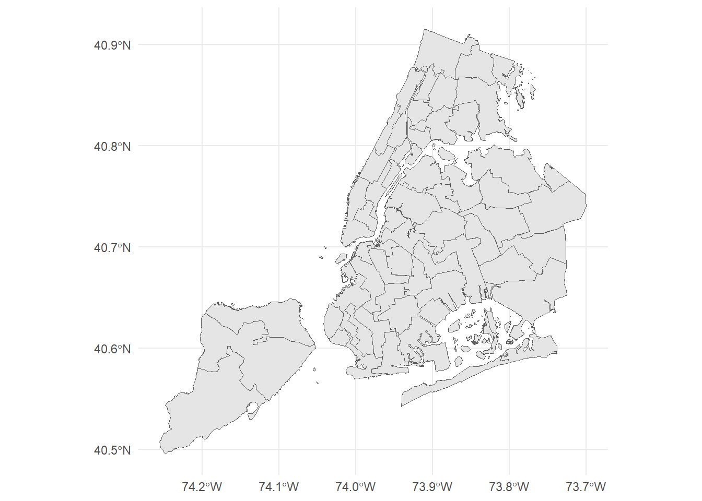
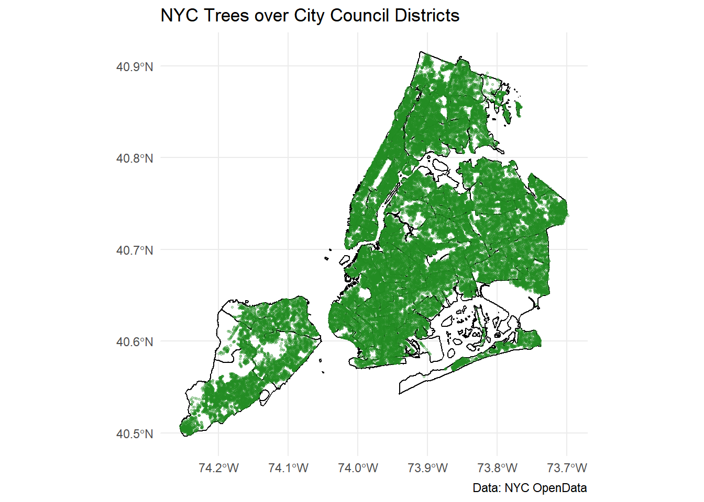
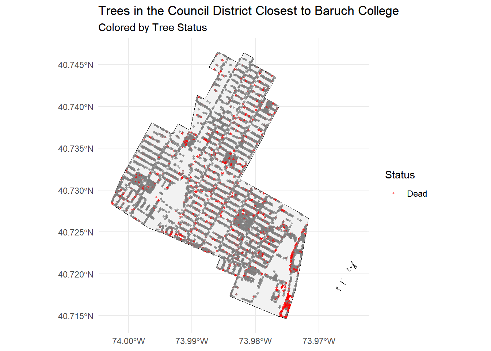
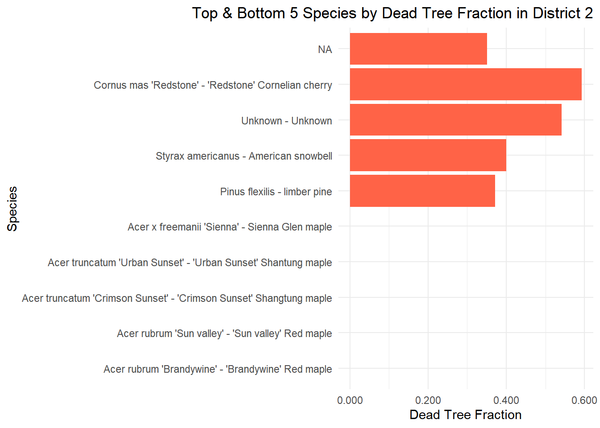
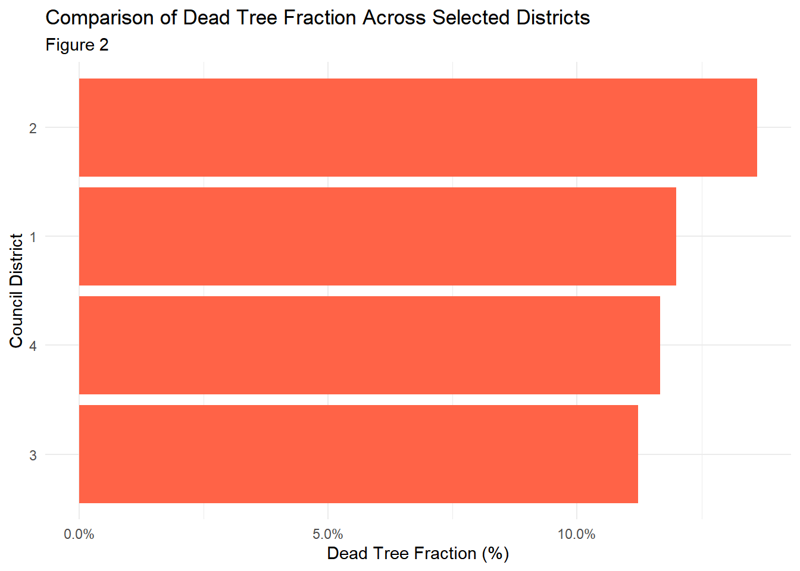

Code
library(httr2)
library(sf)
library(dplyr)
library(glue)
library(purrr)In this mini project, we will examine the “NYC Treemap” data set and analyze it with appealing visualizations. In the end, we will recommend a new program that provides NYC greenery to all parts of New York. First, let’s just read some simple libraries.
In this task, we will download the data set that shows the division within NYC’s 51 council districts.
download_nyc_districts <- function(dTolerance = NULL) {
# Load required packages
if (!require("sf")) install.packages("sf")
library(sf)
if (!require("dplyr")) install.packages("dplyr")
library(dplyr)
# Step 1: Create directory
dir_path <- "data/mp03"
if (!dir.exists(dir_path)) {
dir.create(dir_path, showWarnings = FALSE, recursive = TRUE)
}
# Step 2: Set file URLs and paths
zip_url <- "https://s-media.nyc.gov/agencies/dcp/assets/files/zip/data-tools/bytes/city-council/nycc_25c.zip"
zip_file <- file.path(dir_path, "nycc_25c.zip")
shp_dir <- file.path(dir_path, "nycc_25c_unzipped") # folder to unzip into
# Step 3: Download zip if it doesn't exist
if (!file.exists(zip_file)) {
download.file(zip_url, destfile = zip_file, mode = "wb")
message("Downloaded zip file to ", zip_file)
}
# Step 4: Unzip if folder doesn't exist
if (!dir.exists(shp_dir)) {
unzip(zip_file, exdir = shp_dir)
message("Unzipped files to ", shp_dir)
}
# Step 5: Find the shapefile recursively
shp_files <- list.files(shp_dir, pattern = "\\.shp$", full.names = TRUE, recursive = TRUE)
if (length(shp_files) == 0) {
stop("No shapefile found in the unzipped folder!")
}
# Pick the first shapefile
shp_path <- shp_files[1]
message("Reading shapefile: ", shp_path)
# Step 6: Read the shapefile
data <- sf::st_read(shp_path, quiet = TRUE)
# Step 7: Transform to WGS84
data_wgs84 <- st_transform(data, crs = "WGS84")
# Step 8: Simplify geometry if requested
if (!is.null(dTolerance)) {
data_wgs84 <- data_wgs84 %>%
mutate(geometry = st_simplify(geometry, dTolerance = dTolerance))
message("Simplified geometry with dTolerance = ", dTolerance, " meters")
}
message("Finished reading and transforming shapefile.")
# Step 9: Return the data
return(data_wgs84)
}
#Task 2: Downloading Tree Data
In this task, we will be downloading the tree data from the NYC data set. Afterwards, we will print out the column names to understand the data columns.
library(httr2)
library(sf)
library(dplyr)
library(purrr)
library(glue)
download_nyc_tree_points <- function(limit = 5000) {
dir.create("data/mp03", showWarnings = FALSE, recursive = TRUE)
base_url <- "https://data.cityofnewyork.us/resource/hn5i-inap.geojson"
batch <- 0
downloaded_files <- c()
repeat {
offset <- batch * limit
file_path <- glue("data/mp03/trees_{offset}.geojson")
# Download only if missing
if (!file.exists(file_path)) {
resp <- request(base_url) |>
req_url_query(
"$limit" := limit,
"$offset" := offset
) |>
req_perform()
writeBin(resp_body_raw(resp), file_path)
}
downloaded_files <- c(downloaded_files, file_path)
# Read just to check number of features
temp <- st_read(file_path, quiet = TRUE)
n_rows <- nrow(temp)
message(glue("Batch {batch}: {n_rows} rows."))
if (n_rows < limit) break
batch <- batch + 1
}
# Read & combine all batches safely
tree_data <- map(downloaded_files, function(f) {
df <- st_read(f, quiet = TRUE)
# Convert certain columns to character if they exist
df <- df |> mutate(across(any_of(c("planteddate", "created_at", "updated_at")), as.character))
df
}) |> bind_rows()
return(tree_data)
} [1] "tpcondition" "stumpdiameter" "riskratingdate"
[4] "riskrating" "objectid" "globalid"
[7] "tpstructure" "plantingspaceglobalid" "createddate"
[10] "dbh" "planteddate" "updateddate"
[13] "genusspecies" "geometry" These column names indicate how the data is separated. For example, the genus or species of each tree is recorded, along with its stump’s diameter, the date that it was planted, and its global ID.
#Task 3: Plotting Trees in Districts
Now that we have two data sets, we can create the tree plot per district. To reduce the chance of any errors, we will take a sample of 50000 trees. We can still get a grasp on the data without the use of every tree.
# Make sure both layers use the same CRS
trees <- st_transform(trees, st_crs(nyc_districts_simple))
trees_sample <- trees %>% slice_sample(n = 50000) # ~50k points for plotting
library(ggplot2)
ggplot() +
# Layer 1: Council districts (polygons)
geom_sf(
data = nyc_districts_simple,
fill = NA, # no fill
color = "black", # polygon borders
size = 0.5
) +
# Layer 2: Trees (points)
geom_sf(
data = trees_sample,
aes(geometry = geometry),
color = "forestgreen",
alpha = 0.3,
size = 0.5
) +
theme_minimal() +
labs(
title = "NYC Trees over City Council Districts",
caption = "Data: NYC OpenData"
)
Simple feature collection with 6 features and 16 fields
Geometry type: POINT
Dimension: XY
Bounding box: xmin: -74.20904 ymin: 40.51958 xmax: -73.73589 ymax: 40.88763
Geodetic CRS: WGS 84
tpcondition stumpdiameter riskratingdate riskrating objectid
1 Excellent <NA> <NA> <NA> 86823
2 Good <NA> <NA> <NA> 87623
3 Poor <NA> <NA> <NA> 88023
4 Fair <NA> 2024-06-28 12:41:55 6 88823
5 Dead <NA> <NA> <NA> 88824
6 Fair <NA> <NA> <NA> 88825
globalid tpstructure
1 2B457A4C-E0E4-4E17-81C4-A5449F51C804 Full
2 37195E1A-A7EE-4AA4-8389-19A0ED5C46F7 Retired
3 6BA8E72B-1901-4EF3-ABFF-D11680AB4A9B Retired
4 79A5DBAF-F305-4DA1-A4B1-7A8C8D085435 Full
5 182F6647-D9C1-4A45-ADA0-9ADEFD1ECC60 Retired
6 394AEC59-B91C-45AD-93FB-2996B0C09747 Retired
plantingspaceglobalid createddate dbh planteddate
1 E814CD37-9F53-4D79-AF86-3B454F9D29B9 2015-02-28 05:00:00 20 <NA>
2 A644AB79-A3CB-4F7F-923B-F308E615CCD4 2015-03-03 05:00:00 10 <NA>
3 21431016-EDB8-4A0B-B122-673125800C87 2015-03-03 05:00:00 24 <NA>
4 96FB6C55-612F-466D-9449-85A3CD2178E1 2015-03-04 05:00:00 10 <NA>
5 4796B64F-906C-4345-A4E9-5CD6133642F8 2015-03-04 05:00:00 10 <NA>
6 F31930BA-47FD-4D9F-B8A2-7A4FA4707D16 2015-03-04 05:00:00 19 <NA>
updateddate
1 2016-10-20 17:43:53
2 2019-09-18 13:12:55
3 2018-03-27 14:00:42
4 2024-06-28 12:41:55
5 2016-10-24 02:50:43
6 2017-04-12 09:35:50
genusspecies CounDist
1 Acer nigrum - black maple 24
2 Fraxinus pennsylvanica - Green ash 9
3 Acer platanoides - Norway maple 12
4 Pyrus calleryana - Callery pear 51
5 Gleditsia triacanthos var. inermis - Thornless honeylocust 2
6 Fraxinus americana - white ash 23
Shape_Leng Shape_Area geometry
1 76779.51 186824791 POINT (-73.81657 40.71629)
2 41266.13 56263769 POINT (-73.93848 40.81299)
3 58158.18 131040796 POINT (-73.83244 40.88763)
4 208078.35 657989092 POINT (-74.20904 40.51958)
5 41619.72 48322121 POINT (-73.98032 40.74291)
6 84551.73 311520682 POINT (-73.73589 40.7359)# A tibble: 52 × 2
CounDist n_trees
<int> <int>
1 1 12266
2 2 11562
3 3 11999
4 4 11099
5 5 8325
6 6 12140
7 7 15639
8 8 18180
9 9 13455
10 10 15300
# ℹ 42 more rows#Task 4: Analysis
Question 1: Which district has the most trees?
# A tibble: 1 × 2
CounDist n_trees
<int> <int>
1 51 70965District 51 has the most trees, with 70965 trees.Question 2: Which council district has the highest density of trees?
# Extract area from districts shapefile
districts_area <- nyc_districts_simple %>%
st_drop_geometry() %>%
select(CounDist, Shape_Area)
# Join area to tree counts
districts_trees <- trees_per_district %>%
left_join(districts_area, by = "CounDist")
districts_trees <- districts_trees %>%
mutate(tree_density = n_trees / Shape_Area) # trees per unit area# A tibble: 1 × 4
CounDist n_trees Shape_Area tree_density
<int> <int> <dbl> <dbl>
1 7 15639 55186140. 0.000283District 7 has the highest tree density, with approximately 2.83 trees per 10,000 m².For this question, we wanted to analyze at the 10,000 square unit level. If we tried to measure it at a per square unit level, the value is so small that we can barely notice it!
Question 3: Which district has highest fraction of dead trees out of all trees?
# A tibble: 1 × 4
CounDist total_trees dead_trees frac_dead
<int> <int> <int> <dbl>
1 32 30292 4316 0.142District 32 has the highest fraction of dead trees, with 14.2% of trees dead.This result can illustrate a couple of different points. Either this district does not take care of its trees as well as the other districts, or there are so many old trees in this district that the percentage is just astronomical.
Question 4: What is the most common tree species in Manhattan?
To handle this question, we first need to create a new column to indicate which districts are from which borough.
library(dplyr)
trees_joined <- trees_joined %>%
mutate(
Borough = case_when(
as.numeric(CounDist) >= 1 & as.numeric(CounDist) <= 10 ~ "Manhattan",
as.numeric(CounDist) >= 11 & as.numeric(CounDist) <= 18 ~ "Bronx",
as.numeric(CounDist) >= 19 & as.numeric(CounDist) <= 32 ~ "Queens",
as.numeric(CounDist) >= 33 & as.numeric(CounDist) <= 48 ~ "Brooklyn",
as.numeric(CounDist) >= 49 & as.numeric(CounDist) <= 51 ~ "Staten Island",
TRUE ~ NA_character_
)
)# A tibble: 1 × 2
genusspecies n
<chr> <int>
1 Gleditsia triacanthos var. inermis - Thornless honeylocust 17310The most common tree species in Manhattan is Gleditsia triacanthos var. inermis - Thornless honeylocust, with 17310 trees.I didn’t even know this is a name of a species of trees, so you learn something new every day!
Question 5: What is the species of the tree closest to Baruch College’s campus?
[1] "Zelkova serrata 'Village Green' - 'Village Green' Zelkova"The tree closest to Baruch College is a Zelkova serrata 'Village Green' - 'Village Green' Zelkova.Task 5: Government Project
new_st_point <- function(lat, lon){
st_sfc(st_point(c(lon, lat))) |>
st_set_crs("WGS84")
}
baruch_pt <- new_st_point(40.7403, -73.9833)
nyc_districts_with_dist <- nyc_districts_simple |>
mutate(distance_to_baruch = st_distance(geometry, baruch_pt))
closest_district <- nyc_districts_with_dist |>
slice_min(distance_to_baruch)
closest_districtSimple feature collection with 1 feature and 4 fields
Geometry type: MULTIPOLYGON
Dimension: XY
Bounding box: xmin: -74.00282 ymin: 40.71462 xmax: -73.96403 ymax: 40.74654
Geodetic CRS: WGS 84
CounDist Shape_Leng Shape_Area distance_to_baruch
1 2 41619.72 48322121 0 [m]
geometry
1 MULTIPOLYGON (((-73.96709 4...trees_in_closest_district <- trees |>
st_filter(closest_district)
closest_area_km2 <- as.numeric(st_area(closest_district)) / 1e6
district_stats <- trees_in_closest_district |>
summarise(
total_trees = n(),
dead_trees = sum(tpcondition == "Dead", na.rm = TRUE),
dead_fraction = dead_trees / total_trees
) |>
mutate(tree_density = total_trees / closest_area_km2)
district_statsSimple feature collection with 1 feature and 4 fields
Geometry type: MULTIPOINT
Dimension: XY
Bounding box: xmin: -74.00258 ymin: 40.71482 xmax: -73.97189 ymax: 40.74637
Geodetic CRS: WGS 84
total_trees dead_trees dead_fraction geometry
1 11562 1574 0.1361356 MULTIPOINT ((-73.98039 40.7...
tree_density
1 2584.288Note that tree density is calculated per square kilometer
ggplot() +
geom_sf(data = closest_district, fill = "gray95", color = "black") +
geom_sf(data = trees_in_closest_district,
aes(color = tpcondition), size = 0.7, alpha = 0.6) +
scale_color_manual(values = c("Alive" = "forestgreen", "Dead" = "red")) +
coord_sf() +
theme_minimal() +
labs(
title = "Trees in the Council District Closest to Baruch College",
subtitle = "Colored by Tree Status",
color = "Status"
)
# Load libraries
library(sf)
library(dplyr)
library(ggplot2)
library(glue)
library(purrr)
nyc_districts_simple <- st_transform(nyc_districts_simple, st_crs(baruch_pt))
# Distance to Baruch
nyc_districts_simple$dist_to_baruch <- st_distance(nyc_districts_simple$geometry, baruch_pt)
# Closest district polygon
closest_district <- nyc_districts_simple[which.min(nyc_districts_simple$dist_to_baruch), ]
# --- Step 3: Filter trees in the closest district ---
# Ensure trees CRS matches districts
trees <- st_transform(trees, st_crs(nyc_districts_simple))
# Spatial join to get trees inside closest district
closest_district_trees <- st_join(
trees,
closest_district,
join = st_within
)
# --- Step 4: Compute dead tree fraction per species ---
district_species_dead_filtered <- closest_district_trees %>%
st_drop_geometry() %>%
group_by(genusspecies) %>%
summarise(
total = n(),
dead = sum(tpcondition == "Dead", na.rm = TRUE)
) %>%
mutate(dead_frac = dead / total) %>%
filter(total >= 20)
# Top 5 and bottom 5 by dead fraction
top5 <- district_species_dead_filtered %>% arrange(desc(dead_frac)) %>% head(5)
bottom5 <- district_species_dead_filtered %>% arrange(dead_frac) %>% head(5)
species_plot <- bind_rows(top5, bottom5)
ggplot(species_plot, aes(x = reorder(genusspecies, dead_frac), y = dead_frac)) +
geom_col(fill = "tomato") +
coord_flip() +
scale_y_continuous(labels = function(x) sprintf("%.3f", x)) + # show 3 decimals
labs(
title = paste("Top & Bottom 5 Species by Dead Tree Fraction in District", closest_district$CounDist),
x = "Species",
y = "Dead Tree Fraction"
) +
theme_minimal() +
theme(
plot.title = element_text(hjust = 1))
library(dplyr)
library(ggplot2)
library(sf)
# Ensure your trees have district info
trees_joined <- st_join(trees, nyc_districts_simple, join = st_within)
# Identify closest district (where Baruch College is)
# Suppose you have this from earlier:
# closest_district <- nyc_districts_simple %>% filter(CounDist == "6")
# Create summary table per district
district_summary <- trees_joined %>%
st_drop_geometry() %>%
group_by(CounDist) %>% # exact column name from join
summarise(
total = n(),
dead = sum(tpcondition == "Dead", na.rm = TRUE),
dead_frac = dead / total
)
# Select districts to compare: closest + 3 others (pick arbitrary or nearby districts)
compare_districts <- district_summary %>%
filter(CounDist %in% c(closest_district$CounDist, "1", "3", "4")) # change as needed
# Bar chart: fraction of dead trees
ggplot(compare_districts, aes(x = reorder(CounDist, dead_frac), y = dead_frac)) +
geom_col(fill = "tomato") +
coord_flip() +
scale_y_continuous(labels = scales::percent_format(accuracy = 0.1)) + # show percentage
labs(
title = "Comparison of Dead Tree Fraction Across Selected Districts",
subtitle = ("Figure 2"),
x = "Council District",
y = "Dead Tree Fraction (%)"
) +
theme_minimal()
The council district nearest Baruch College 2 is home to 1094587 trees. Our analysis of tree health indicates that 120587 of these trees are dead, representing 11.0% of the district’s canopy. The district exhibits one of the highest dead tree fractions when compared to nearby districts, making it a priority for an urban forestry intervention. Thus, we are proposing a plan to secure the district’s green future by prioritizing protecting dying species of trees, planting more trees wherever available, and identifying the high risk trees.
To start, we propose that all of the 120587 trees be replaced. These trees are occupying spaces that could otherwise host live trees, so replacing them is imperative. When replacing these trees, our goal is to plant the species that have the highest death toll, (Cornus mas ‘Redstone’ - ‘Redstone’ Cornelian cherry, Unknown - Unknown, Styrax americanus - American snowbell, Pinus flexilis - limber pine, NA), to ensure biodiversity and prevent these species from going extinct. The wildlife in our district can also benefit from the diverse plants by maximizing available homes and shelters. Included in the replacement of the dead trees, we propose to plant 500 additional trees, prioritizing the species with higher death tolls. We also propose that the trees that are of high risk to ensure public safety.
Compared to its nearby districts (1, 3, 4), district 2 has the highest fraction of dead trees, 11.0%. Thus, we emphasize the importance of actively maintaining district 2 and clearing the way for more tree life.
We provided visuals on this report to highlight our findings. The first figure is a zoomed in map of district 2. The red dots represent dead trees within the district, which we propose to locate and replace. The second figure is a box chart that lists, within the population of dead trees, the top and bottom 5 dead species. Important to note that the bottom 5 species do not have a visual bar when increasing the decimal places, showing that these species are not struggling to survive or have a lower representation in our tree population in general. Finally, the third figure is a box chart that compares the dead tree fraction of districts 1, 2, 3 and 4. The result shows that district 2 has the highest dead tree fraction.
Prioritizing the health of district 2’s tree population will produce a cleaner and safer environment and allow for healthier urban development. With our proposal, we aim to open room for diverse trees. Once implanted, our proposal will create public awareness of our city’s development, creating incentives to ensure our city’s nurishment.